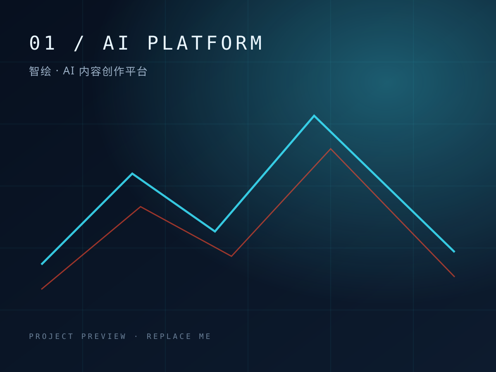
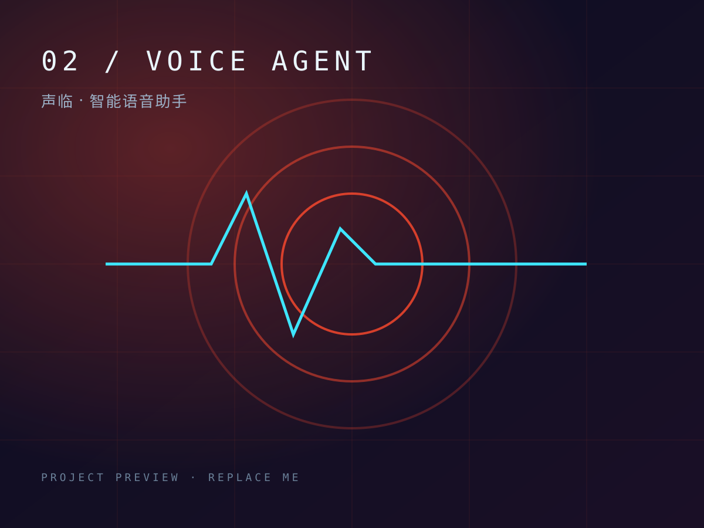
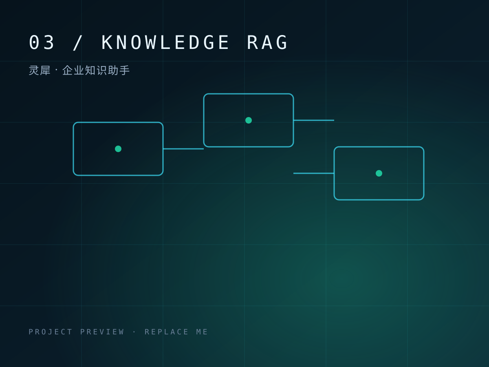
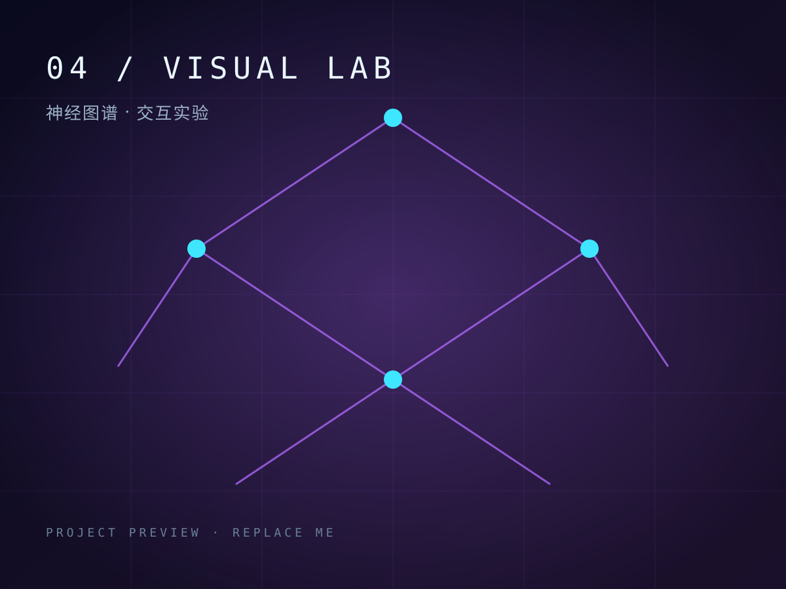
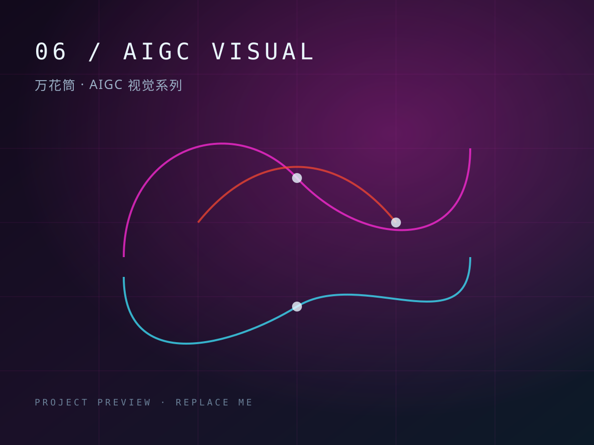

EDU / 教育经历时间待填写
东南大学985
M.Eng. / 专业待填写 · 硕士
985 高校硕士阶段，接受系统的科研训练与工程实践，形成扎实的技术方法论与独立研究能力。
- 硕士阶段围绕专业方向开展系统学习与课题研究，训练了从问题定义、方案设计到实验验证的完整研究闭环。
用代码把大模型能力，变成真正跑得起来的系统。
专注 LLM 应用、Agent 编排与 RAG 工程化落地。

02工作经历EXPERIENCE
03教育经历EDUCATION
04AI 项目PROJECTS
05技能工具TOOLKIT
06联系我CONTACT985 高校硕士阶段，接受系统的科研训练与工程实践，形成扎实的技术方法论与独立研究能力。
本科阶段打下计算机基础，开始接触编程与工程实践，为后续转向 AI 应用开发奠定根基。
主导企业级 AI 内容创作平台后端开发，用 LangGraph 编排多模态生成流水线，上线 6 个月月活突破 8 万。
负责智能写作与排版工具前后端开发，React + Node.js 完成 3 个大版本迭代，付费转化率提升 35%。
参与教育类产品从 0 到 1 开发，独立负责 20+ 功能模块的前端实现与维护，沉淀通用组件库与工程化脚手架。
主力 Python，能用一个语言贯穿数据处理到服务部署。
从提示词到 Agent 编排，构建可靠的智能应用链路。
把模型能力包成可用界面，端到端交付完整产品。
向量库、评测、容器化，让系统真正在线上稳定跑。
点一下就能联系我，
微信可一键复制。